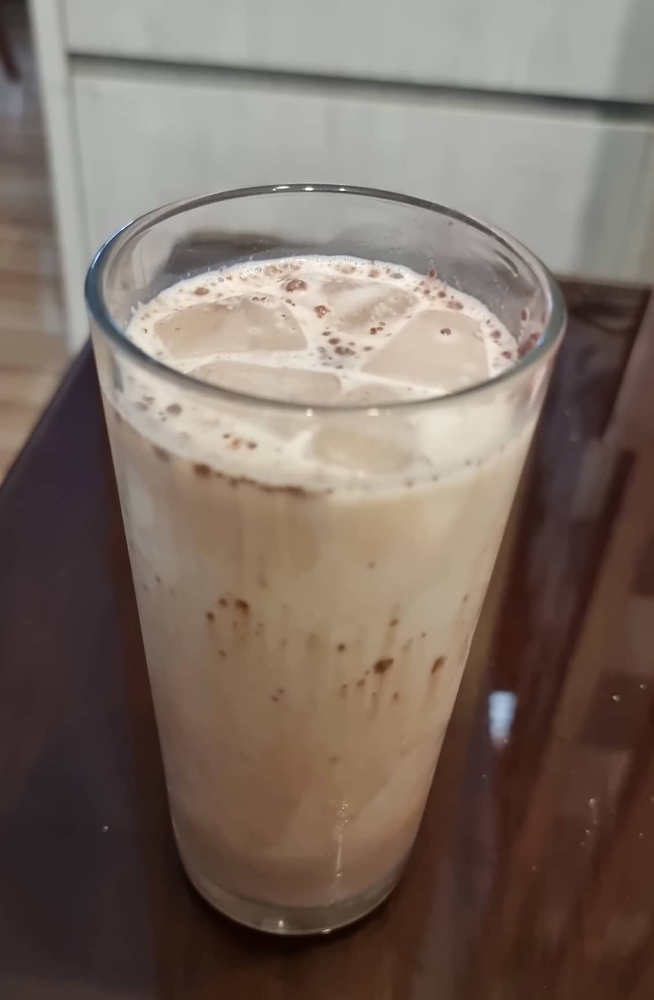

Niel's Ultimate Milo

Description
Milo is a chocolate malt drink popular among children and adults here in the Philippines.
This recipe will show you on how I prepare my Milo chocolate drink. Niel's ultimate milo can be paired with the Lucky Me Pancit Canton for a better dining experience.
Ingredients
- Milo powder
- Sugar
- Nestle's Fresh Milk
- Water
- Ice cubes
Steps
- Put three spoonfuls of Milo powder in one glass.
- Put a half spoon of sugar.
- Fill the glass with a little amount of water until the powders are submerged.
- Mix it well until the powder is dissolved.
- Put 4 pcs of ice cubes.
- Fill the glass with Nestle's fresh milk until it is full.
- Stir well and enjoy!
Return to homepage